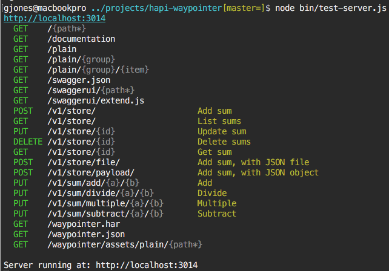
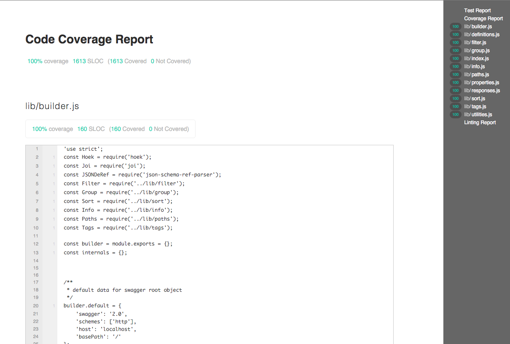
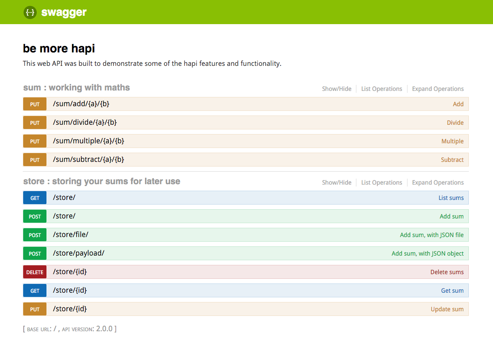
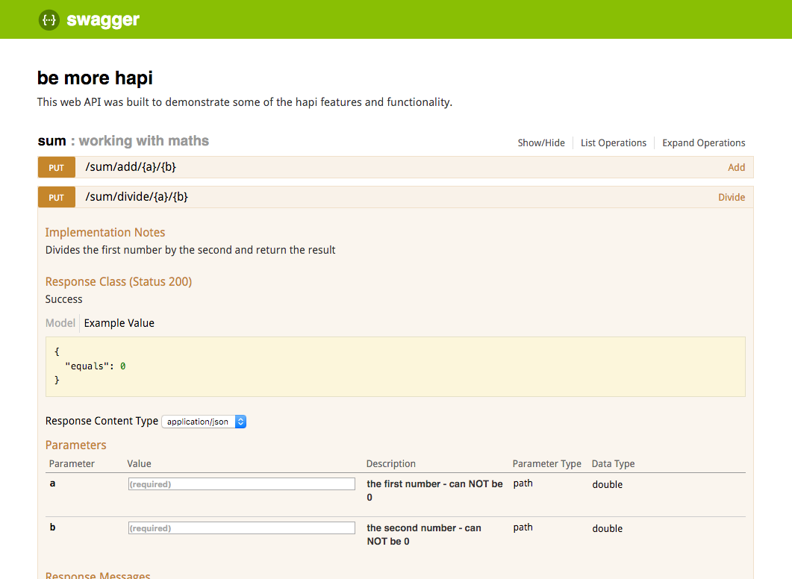
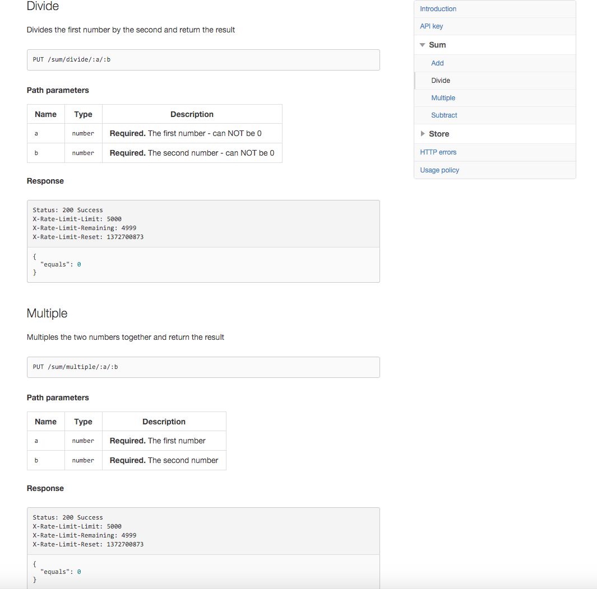
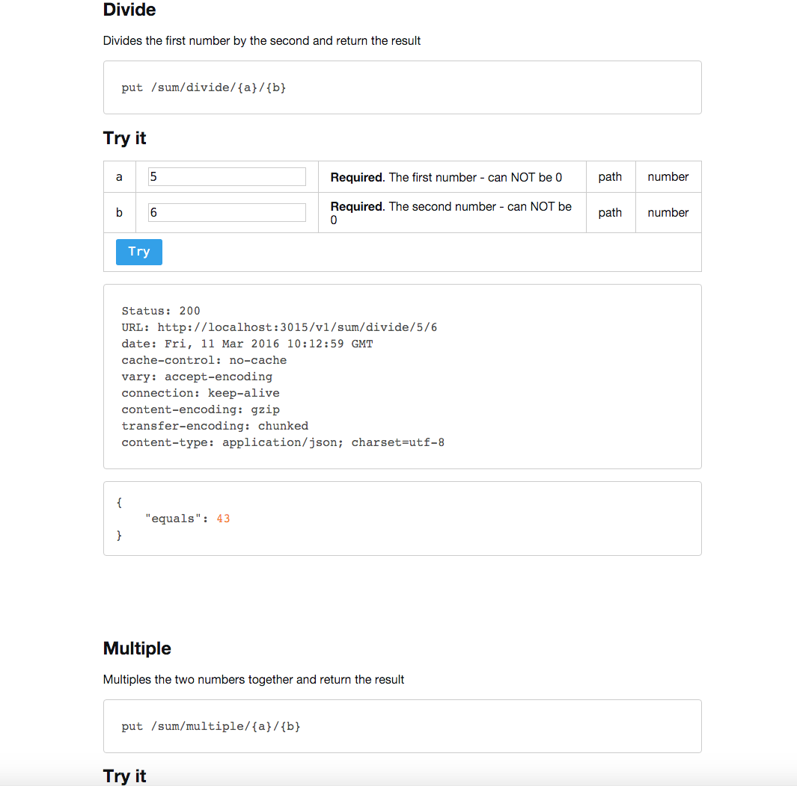
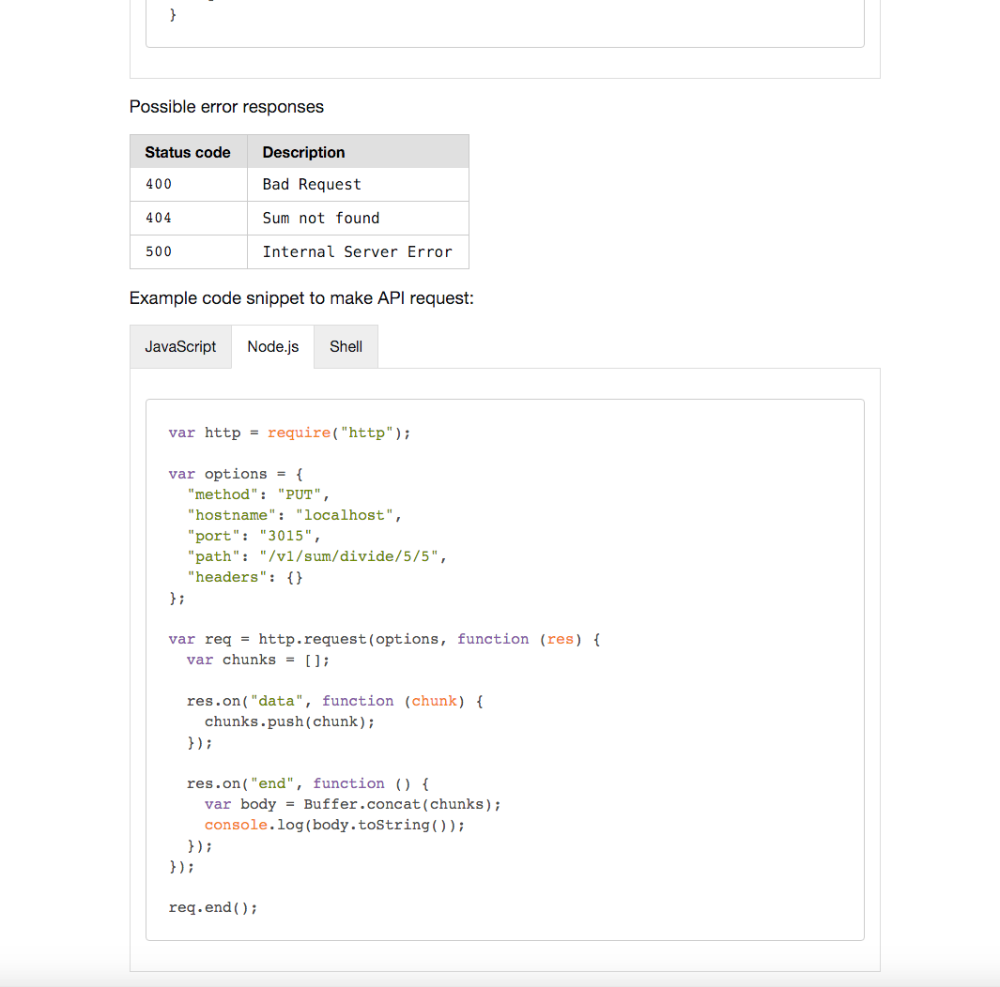

Time to be Hapi
Presentation and code exampleshttps://github.com/glennjones/time-to-be-hapi
"Battle harden"
Hapi was able to handle all of Walmart mobile Black Friday traffic with about 10 CPU cores and 28Gb RAM (of course we used more but they were sitting idle at 0.75% load most of the time)
Eran Hammer #1326
Creating a HAPI server
const Hapi = require('hapi');
const server = new Hapi.Server();
server.connection({ port: 3000 });
server.start((err) => {
if (err) {
throw err;
}
console.log('Server running at:', server.info.uri);
});
Adding a route
server.route([{
method: 'GET',
path: '/',
handler: (request, reply) => {
reply('Hello, world!');
}
}]);
Passing a path parameter
server.route([{
method: 'GET',
path: '/{name}',
handler: (request, reply) => {
reply('Hello, ' + request.params.name + '!');
}
}]);
Plugins
Plugins provide a way to organise your code into logical components and put them together in different combinations. The "right way" to build a Hapi app is to create it with plugins.
Hapi plugins are powerful
- Define and add routes to the server
- Modify a request during its life cycle
- Load in a set order by setting peer dependencies
- Have thier own memory context
- They can access other plugins
- Inject methods into the main app
- and more ...
Registering plugins
const Inert = require('inert');
server.register([Inert], () => {});
Registering plugins
const Inert = require('inert');
const Vision = require('vision');
const SiteSettings = require('../plugins/site-settings');
server.register([
Inert,
Vision,
SiteSettings] (err) => {
server.route(Routes);
server.start(() => {
console.log('Server running at:', server.info.uri);
});
});
Inert: Static files and directories
server.register([Inert], () => {});
server.route([{
method: 'GET',
path: '/{path*}',
handler: {
directory: {
path: './public'
}
}
}]);
Vision: Templates
server.register([Vision], () => {});
server.views({
relativeTo: __dirname,
path: 'templates',
engines: { html: require('handlebars') },
});
server.route([{
method: 'GET',
path: '/',
handler: (request, reply) => {
reply.view('index.html', {'date': new Date()});
}
}]);
Routes ‐ a rich set of features
{
method: 'POST',
path: '/user',
config: {
handler: updateUser,
description: 'Add a new user',
tags: ['api', 'user'],
auth: 'bearertoken'
cors: true,
jsonp: 'callback'
}
}
Blipp: Displays the routes table at startup
Configurationto logic
Glue: Everything as configuration
var manifest = {
server: {},
connections: [
{
host: 'localhost',
port: 3000,
labels: ['web']
}
],
registrations: [
{plugin: 'inert'},
...Handlers ‐ interface to your business logic
handler: (request, reply) => {
Users.getById(request.params.id, (err, json) => {
if (err !== null) {
reply(Boom.notFound('invalid request: ' + err));
} else {
reply(json).type('application/json').code(200)
}
});
}
"hapi hapi joi joi"
Object schema validation
Joi: Validating your inputs
- Validates - payload, query, params, headers and auth
- Types - object, array, string, number, boolean, date, binary and alternatives
- Sets of tests for each type - require(), alphanum(), guid(), min(), max(), email() and unique() etc.
- Regex tests - . regex(/[a-zA-Z0-9]{3,30}/)
- Metadata - label, description and tags
Joi: Validating path parameters
server.route({
method : 'GET',
path : '/user/{id}',
config : {
handler: handler,
validate: {
param: {
id: Joi.number().min(0).required()
}
}
}
});Joi: Validating querystrings
server.route({
method : 'GET',
path : '/users',
config : {
handler: handler,
validate: {
query: {
pagenum: Joi.number().min(1).default(1),
pagesize: Joi.number().min(1).max(100).default(20)
}
}
}
});Joi: A schema for your data
const sumSchema = Joi.object({
id: Joi.string().required().example('x78P9c'),
a: Joi.number().required().example(5),
b: Joi.number().required().example(5),
operator: Joi.string().required().valid(['+','-','/','*']).example('+'),
equals: Joi.number().required().example(10),
created: Joi.string().required().isoDate().description('ISO date').example('2015-12-01'),
modified: Joi.string().isoDate().description('ISO date').example('2015-12-01')
}).label('Sum');Joi: Common patterns of use
const init = function (options, next) {
let settings = Hoek.applyToDefaults(defaults, options);
Joi.assert(settings, settingsSchema);
...
Request lifecycle
The heart of Hapi
Request lifecycle events
- onRequest
- Process query extensions, Parse cookies
- onPreAuth
- Authenticate request, Read and parse payload, Authenticate payload
- onPostAuth
- Validate path parameters, Validate query, Validate payload
- onPreHandler
- Route pre-requisites, Route handler
- onPostHandler
- Validate response payload
- onPreResponse
- Send response
onPostHandler
server.ext('onPostHandler', (request, reply) => {
let response = request.response;
if (response.variety === 'view') {
if (!response.source.context) {
response.source.context = {};
}
response.source.context.query = request.query;
}
return reply.continue();
});server.method
const add = function (x, y, next) {
next(null, x + y);
};
server.method('add', add, {});
The third parameter is options, mostly used for caching code patterns
server.decorate
const success = function () {
return this.response({ status: 'ok' });
};
server.decorate('reply', 'success', success);server.bind
server.bind({
service: new Service({
url: 'http://example.com/api',
accesstoken: 'gh45-is76-nb10-fy49',
})
});Toolbox
Features and plugins that power a Hapi app.
Caching client-side
path: '/client/',
method: 'GET',
handler: function (request, reply) {
reply({ 'time-to-be': 'hapi' });
},
config: {
cache: {
expiresIn: 30 * 1000,
privacy: 'private'
}
}.etag('xxxxxxxxx') | .header('Last-Modified', date.toUTCString());Catbox: Caching server-side
- Built-in by default
- Catbox: Redis, MongoDB, Memcached, Riak, Amazon S3, RethinkDB, Couchbase, Aerospike and LevelDB
- expiresIn: 20 * 60 * 1000
- expiresAt: 14:56
- staleIn - auto refresh of a cached value
- Request timeouts that fallback to cache
Authentication
const Basic = require('hapi-auth-basic');
server.register(Basic, (err) => {
server.auth.strategy('simple', 'basic', { validateFunc: validate });
server.route({
method: 'GET',
path: '/',
config: {
auth: 'simple',
handler: function (request, reply) {
reply('hello, ' + request.auth.credentials.name);
}
}
});
});
Bell: Authentication
Third-party authentication plugin for Facebook, GitHub, Google, Instagram, LinkedIn, Twitter, Yahoo, Foursquare, VK, ArcGIS Online, Windows Live, Nest, Phabricator, BitBucket, Dropbox, Reddit, Tumblr and Twitch
server.auth.strategy('twitter', 'bell', {
provider: 'twitter',
password: 'cookie_encryption_password_secure',
clientId: 'my_twitter_client_id',
clientSecret: 'my_twitter_client_secret',
isSecure: false // Terrible idea but required for developing locally
});
h2o2: Proxy other API's
path: '/rest/v1/alpha/{code}',
config: {
validate: {
params: {
code: Joi.string().length(2).required()
}
},
handler: {
proxy: {
host: 'restcountries.eu',
protocol: 'https',
passThrough: true,
xforward: true,
onResponse: replyWithJSON
Bassmaster: Batching
- Batches endpoints making it easy to combine requests
- Supports pipelining the result of one endpoint into others within the batch
{ "requests": [
{"method": "get", "path": "/places/the-open-house"},
{"method": "get", "path": "/users/$0.author"}
] }Good: Process monitoring/logging
- Ops - Process performance - CPU, memory, disk, and others.
- Request - Request logging information
- Error - Request responses that have a status code of 500
Reporters for console, file, HTTP, UDP, winston or logstash
Lab & Code: Testing
- Lab works with any assertion library that throws an error
- eslint to Hapi styleguides
- Coverage reports
- Global variable leaks detection
- Works with CI like travis
Lab: Coverage report
Testing - server.inject
server.inject({ method: 'GET', url: '/swagger.json' }, function (response) {
expect(response.statusCode).to.equal(200);
expect(response.result.paths['/test'].post.summary).to.equal('Add sum');
done();
});
hapi-swagger: Documentation
hapi-swagger: Documentation
hapi-waypointer: Not production
- Documents Restful APIs
- Builds on top of swagger.json format
- Provides code examples/snippets
- Builds example JSON output for each endpoint
- Allows authors to inject text in githubs markdown format
- Themes built with handlebars
- Can be single page or multi page depending on the theme design
- Any frontend dev should be able to modify or create a theme
hapi-waypointer: Hub theme
hapi-waypointer: Form theme
hapi-waypointer: Plain theme
Resources:
- Full Documentation - http://hapijs.com/api
- Tutorials - http://hapijs.com/tutorials
- Plugins - http://hapijs.com/plugins
- Slides - https://github.com/glennjones/time-to-be-hapi
- Example apps - https://github.com/glennjones/time-to-be-hapi